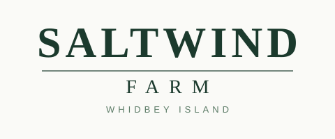
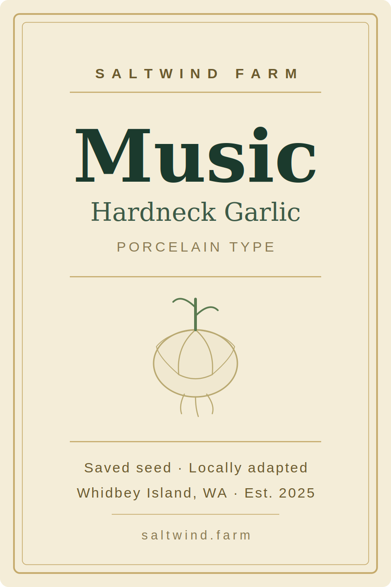
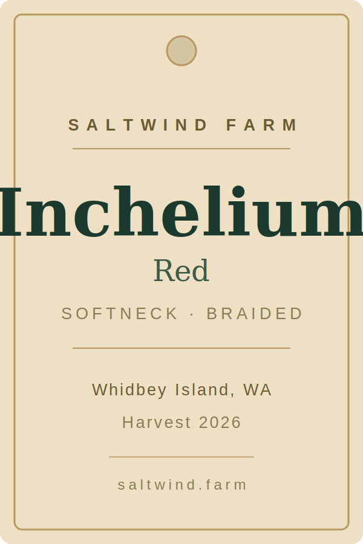
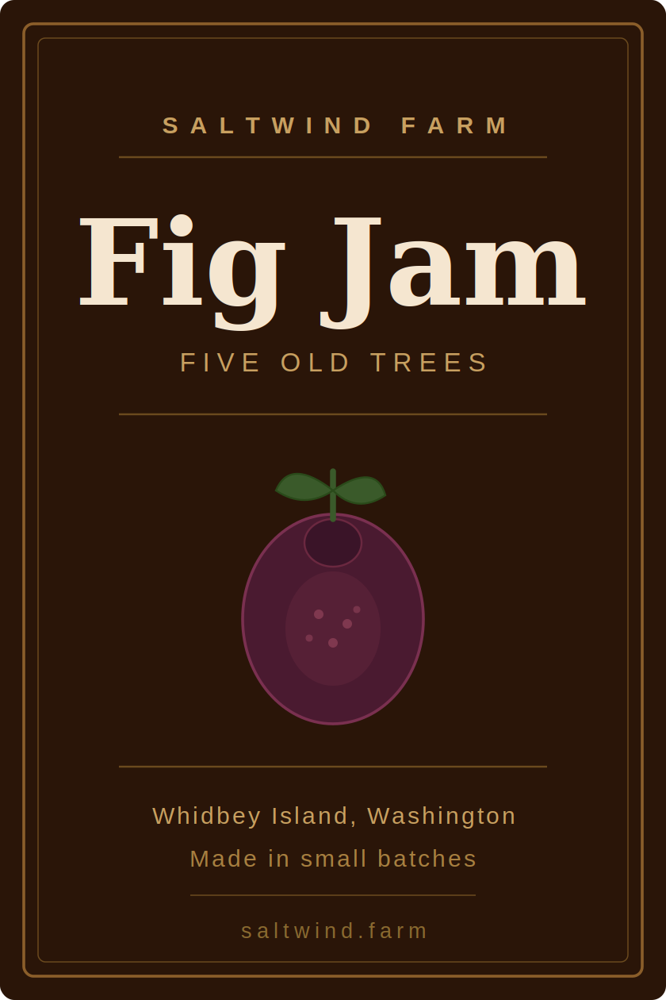
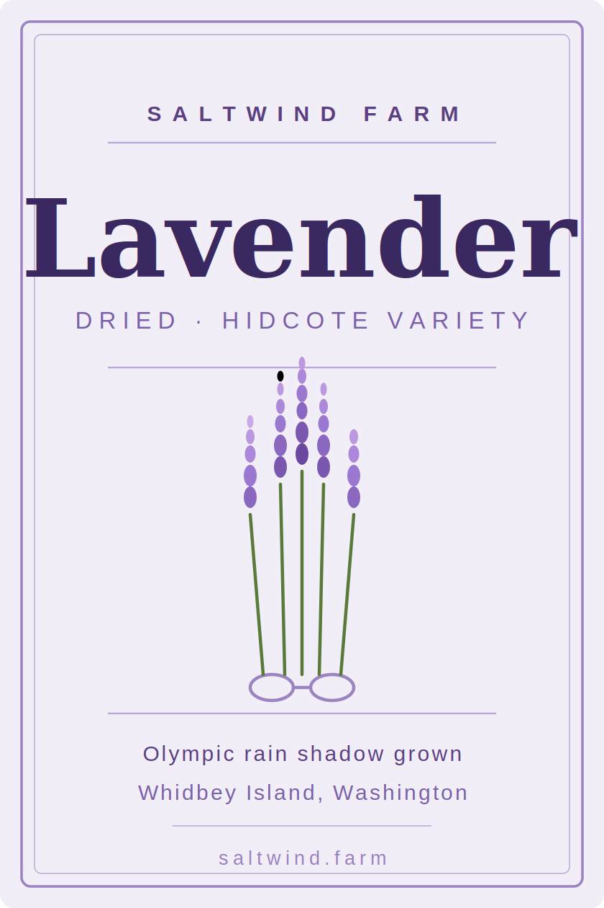

Hardneck garlic, figs, dahlias & lavender grown in the Olympic rain shadow
Saltwind Farm is a small specialty farm on Whidbey Island, Washington. We grow what the island climate does best: hardneck garlic varieties selected for the maritime Northwest, figs from five established trees, cut dahlias through the summer, and dried lavender in the Hidcote tradition. We sell directly to local restaurants and at farmers markets.

Music porcelain hardneck, saved seed locally adapted to Whidbey Island since 2025.

Inchelium Red softneck, hand-braided. A beautiful and practical way to store garlic.

Made in small batches from our five old fig trees. Rich, dark, and deeply flavored.

Hidcote variety, grown in the Olympic rain shadow and dried for lasting fragrance.
We sell at Whidbey Island farmers markets during the growing season and supply a handful of local restaurants year-round. If you're a chef or market buyer interested in what we grow, check back soon.